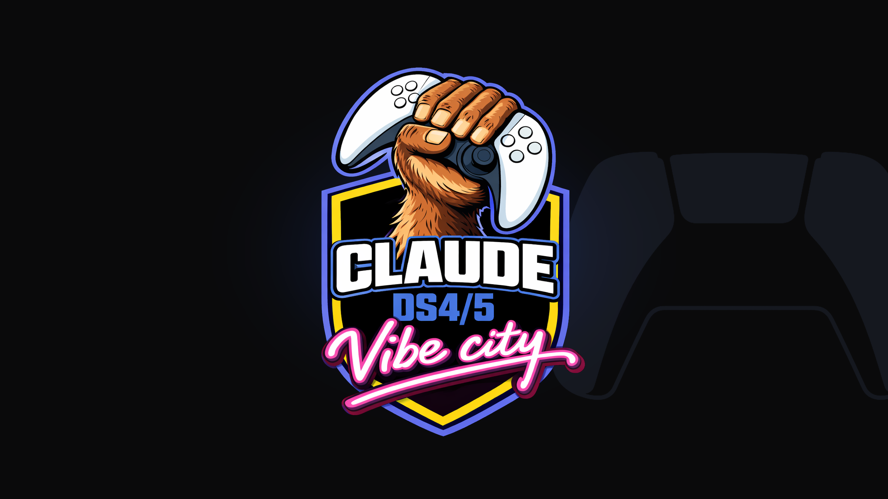
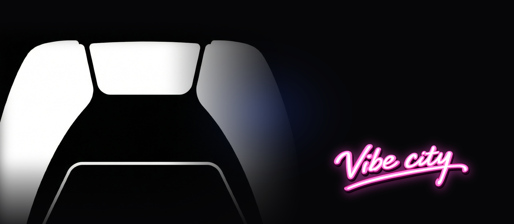

formerly DS4CC — the shortcut mapper, preserved
omegaG
Turn a PlayStation controller into a shortcut mapper for terminal-first development.
Same package and binary (ds4cc); Windows config path preserved — MIT attribution intact.
Linux and Windows shortcut mapping · DualSense & DualShock 4 — USB + Bluetooth · tmux / Claude Code keybindings · Free & open source · Built with Rust
Windows-only lightbar feedback
Your agents, in color.
With the optional Windows-only Codex runtime enabled, six chat slots live behind the PS modifier. The controller lightbar can project the selected slot’s state. The controls below are a website illustration of those documented states, not a live controller or HID connection.
Interactive illustration
Selected slot 3 status: thinking
slot source — recent · pinned · priority · custom
In the Windows runtime, a controller lightbar is lossy: it shows the selected slot, not six colors at once. This status projection is not available on Linux. DS4 has no player or mute LEDs.
Optional Windows-only Codex controller runtime
One modifier.
The whole session.
[01]
Hold PS for the modifier layer
While PS is held the controller goes exclusive: L1 / R1 cycle the six chat slots, Share starts a blank thread, Options forks it, the touchpad selects — and a second press within 350 ms activates. Release PS to return to the generic mapper: Share and Options are unmapped by default; touchpad press clicks while touchpad mode is enabled and is otherwise configurable, with no default action.
[02]
Core actions under your thumbs
Cross and Circle are the one-shot accept / decline for the armed approval — nothing else can fire them. Square toggles the priority tier, Triangle sends the bounded composer, and, when a voice command is configured, L2 controls push-to-talk: a second press within 350 ms latches hands-free, the next press stops.
[03]
Reasoning on the D-pad
D-pad up / down steps through the model-advertised reasoning efforts — stay cheap on simple turns, push deeper when it counts. The right stick’s four cardinal directions fire your configured actions behind a dead zone with hysteresis; L3 and R3 run your first command and skill.

omegaG | formerly DS4CC — 2026 Configured voice dictates. Controller navigates. Keyboard optional when configured.Specifications
Specs
- Platform
- Windows 10 / 11 — hidden console, tray icon. Linux: Ubuntu 22.04+ and Arch with feature-parity mapping (evdev / uinput).
- Controllers
- DualSense and DualShock 4. USB and Bluetooth; USB takes priority, Bluetooth is the automatic fallback.
- Feedback
- Static lightbar color and mic LED are supported by the mapper. Codex status-to-lightbar projection is an optional Windows-only feature.
- Mapping
- Every configurable button resolves to a key combo, a chord sequence, a tmux action, or a Claude Code action. On DualSense, touchpad swipe moves the cursor; DualShock 4 uses left-stick mouse because coordinates are unsupported. On both controllers, touchpad press clicks while touchpad handling is enabled. Right stick scrolls, vertical + horizontal; mute toggles the system microphone.
- Detection
- tmux and Claude Code keybindings are detected through WSL on Windows and natively on Linux. Missing pieces degrade gracefully to documented defaults.
- Codex runtime
- Windows-only, optional, and disabled by default. It supervises a local
codex app-server --stdio. On Linux the configuration still parses, but enabling it logs a warning and the runtime is ignored. - Config
- TOML. The preserved Windows path is
%APPDATA%\ds4cc\config.toml. Linux uses$XDG_CONFIG_HOME/ds4cc/config.toml, falling back to~/.config/ds4cc/config.tomlwhen$XDG_CONFIG_HOMEis unset. Every setting is optional — defaults work out of the box. - Stack
- Rust 2024 edition, tokio, hidapi. Package and binary name remain
ds4cc. Input read 5 ms, output refresh 100 ms. MIT license.
Default map — fixed
Default map — configurable